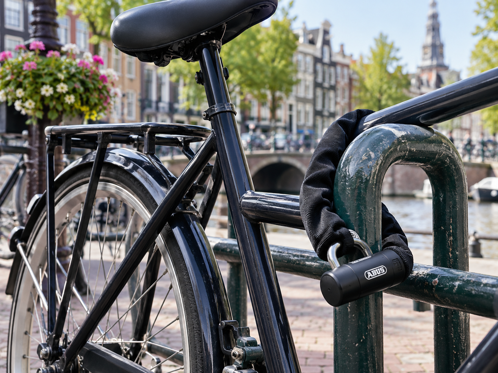
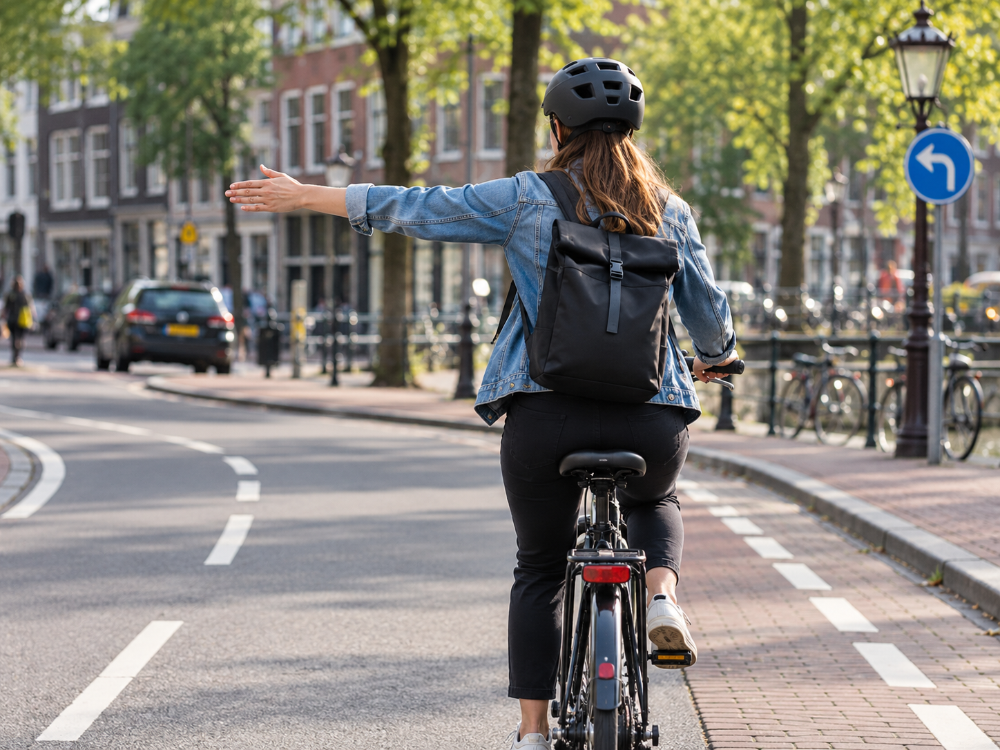
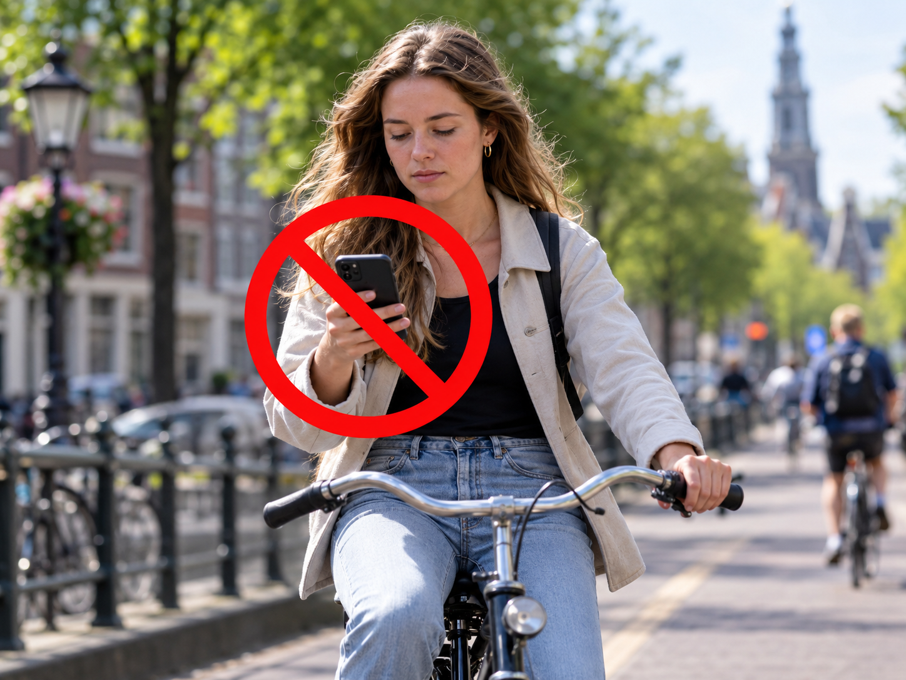

Ride Smart and Enjoy Your Journey
Cycling around Amsterdam can be a great way to explore
the city, but a few simple tips can make your ride
easier and safer. Keep your attention on the road,
communicate with other road users, and protect your
bike when you stop.

Bike Lock
Always lock your bike when you leave it, even if
you are only stopping for a short time.
Use a strong bike lock and secure the frame
to a fixed object when possible.
A good lock can help reduce the risk of your
bike being stolen.

Hand Signals
Use clear hand signals when you want to turn.
A hand signal lets cyclists, cars, and people
walking around you know what you plan to do.
Check your surroundings before changing direction
and give others enough time to react.

No Phone
Keep your phone away while cycling.
Looking at your phone can distract you from
the road and the people around you.
If you need to check a message, stop somewhere
safe first and then use your phone.